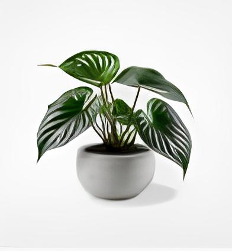

 This online platform delivers real-time sensor data essential for cultivating herbs, monitoring key factors including light levels, soil moisture, and temperature. Live insights are paramount for understanding the specific needs of various herbs, empowering enthusiasts and gardeners to refine their care routines. By utilizing dynamic data, users can create optimal growing conditions, ensuring robust growth and flavor development in herbs. This live information serves as a valuable resource for cultivating a thriving herb garden tailored to individual plant varieties and culinary preferences.